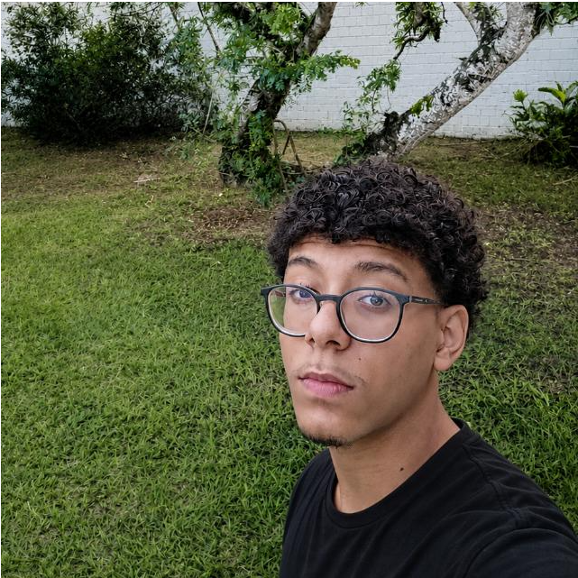

Sou um estudante do 2º ano do Ensino Médio, estou em processo de formação técnica e profissional na Escola SESI Milton Santos em conjunto com o curso de Informática para Internet no SENAI. Todavia, para além das atividades acadêmicas, me caracterizo como alguém com forte teor crítico, habilidade comunicacional refinada e um forte grau de comprometimento com minhas responsabilidades.
Tenho interesse na área de Psicologia, considerando meus pontos fortes e minha adesão e apreciação à área. Além disso, meu objetivo principal é conseguir utilizar o curso técnico em correlação com a área de psicologia, considerando a forma como o mercado vem se modelando e vai se criando uma necessidade em abas asa áreas, tanto pela evolução rápida da tecnologia, como nas IAs, quanto na necessidade psicológica atual que estamos vivendo.
Cursando o 2º ano do Ensino Médio — Formação Técnica e Profissional
Iniciado em Fev/2025 — Previsão de conclusão: Nov/2027
Iniciado em Fev/2025 — Previsão de conclusão: Nov/2027